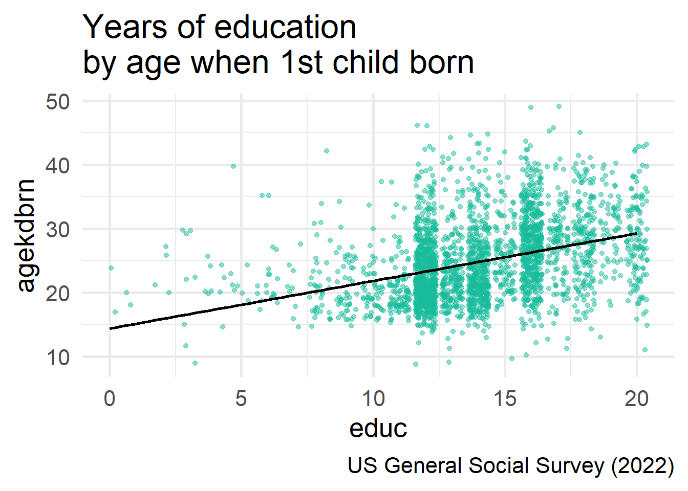

[conflicted] Will prefer haven::is.labelled over any other package.
[conflicted] Will prefer dplyr::filter over any other package.
[conflicted] Will prefer dplyr::summarise over any other package.Statistical Tests II
Agenda
- \(chi^2\) Test
- Pearson’s Correlation Coefficient (R)
- forcats (reorder factor levels)
- missing data?
- outliers – data viz & tables
- dates?
- lists
Learning objectives
By the end of the lecture, you will be able to …
- Use R to calculate chi-square tests
- Use R to calculate Pearson’s Correlation Coefficient (R)
Code-along 06
Download and open code-along-06.qmd
Variables
fefamBetter for man to work, woman tend homepostlifeBelief in life after death
lifenowR’s rating of life overall now from 0-10premarsxSex before marriageagekdbrnR’s age when 1st child bornsexRespondents sexageAge of respondentpolviewsThink of self as liberal or conservative
Variable Management
Let’s make a df with only the (pretty) categorical and continuous variables we’ll analyze.
# Categorical Variables
my_cat <- gss22 |>
select(id, premarsx, fefam, postlife, sex, polviews) |>
zap_missing() |>
as_factor() |>
droplevels()
# Continuous Variables
my_con <- gss22 |>
select(id, age, educ, lifenow, agekdbrn) |>
mutate(
age = as.numeric(age),
educ = as.numeric(educ),
lifenow = as.numeric(lifenow),
agekdbrn = as.numeric(agekdbrn))
# Combine the two dataframes
my_data <- left_join(my_cat, my_con, by = "id")\(chi^2\) Test
\(chi^2\) in action
The news has been reporting a large gender difference in attitudes about gender roles.
You evaluate this narrative using the variable fefam:
It is much better for everyone involved if the man is the achiever outside the home and the woman takes care of the home and family.
. . .
How do you test your hypothesis?
Which of these equations represents your research hypothesis?
- There is no association between gender identity and attitudes about gender roles (statistically independent).
- Gender identity and attitudes about gender roles are related in the population (statistically independent).
- Gender identity and attitudes about gender roles are related in the population (statistically dependent).
Which of these equations represents your null hypothesis?
- There is no association between gender identity and attitudes about gender roles (statistically independent).
- Gender identity and attitudes about gender roles are related in the population (statistically independent).
- There is no association between gender identity and attitudes about gender roles (statistically dependent).
Review: Pretty cross-tab
Use summarytools::ctable
- 1
-
Change from
table()toctable(). - 2
- The “c” gives column %; “r” would give row %.
- 3
- This adds the % symbols to the table.
- 4
- Exclude the missing levels from the table.
Cross-Tabulation, Column Proportions
fefam * sex
Data Frame: my_data
------------------- ----- --------------- --------------- ---------------
sex male female Total
fefam
strongly agree 87 ( 6.8%) 84 ( 5.8%) 171 ( 6.3%)
agree 292 ( 22.9%) 221 ( 15.3%) 513 ( 18.9%)
disagree 573 ( 44.9%) 602 ( 41.6%) 1175 ( 43.2%)
strongly disagree 323 ( 25.3%) 539 ( 37.3%) 862 ( 31.7%)
Total 1275 (100.0%) 1446 (100.0%) 2721 (100.0%)
------------------- ----- --------------- --------------- ---------------Pretty cross-tab (new)
Now that we know how to use the dplyr |>!
sex
|
Total | ||
|---|---|---|---|
| male | female | ||
| fefam | |||
| strongly agree | 87 (6.8%) | 84 (5.8%) | 171 (6.3%) |
| agree | 292 (23%) | 221 (15%) | 513 (19%) |
| disagree | 573 (45%) | 602 (42%) | 1,175 (43%) |
| strongly disagree | 323 (25%) | 539 (37%) | 862 (32%) |
| Total | 1,275 (100%) | 1,446 (100%) | 2,721 (100%) |
Pretty cross-tab with p-value
my_data |>
tbl_cross(
row = fefam,
col = sex,
percent = "column",
missing = "no") |>
add_p(source_note = TRUE)
sex
|
Total | ||
|---|---|---|---|
| male | female | ||
| fefam | |||
| strongly agree | 87 (6.8%) | 84 (5.8%) | 171 (6.3%) |
| agree | 292 (23%) | 221 (15%) | 513 (19%) |
| disagree | 573 (45%) | 602 (42%) | 1,175 (43%) |
| strongly disagree | 323 (25%) | 539 (37%) | 862 (32%) |
| Total | 1,275 (100%) | 1,446 (100%) | 2,721 (100%) |
| Pearson’s Chi-squared test, p<0.001 | |||
Which of these statements best summarizes your conclusion?
- Our findings prove that gender identity has no effect on attitudes about gender roles
- Since the p-value is above 0.05, we can conclude that gender identity strongly influences attitudes about gender roles.
- We find no statistically significant relationship between gender identity and attitudes about gender roles.
Caution: size matters
my_data |>
filter(age < 21) |>
tbl_cross(
row = fefam,
col = sex,
percent = "column",
missing = "no") |>
add_p(source_note = TRUE)
sex
|
Total | ||
|---|---|---|---|
| male | female | ||
| fefam | |||
| strongly agree | 3 (7.5%) | 3 (6.3%) | 6 (6.8%) |
| agree | 11 (28%) | 6 (13%) | 17 (19%) |
| disagree | 19 (48%) | 19 (40%) | 38 (43%) |
| strongly disagree | 7 (18%) | 20 (42%) | 27 (31%) |
| Total | 40 (100%) | 48 (100%) | 88 (100%) |
| Fisher’s exact test, p=0.065 | |||
Our sample size is relatively small once we filtered out people older than 25. We have 88 people between the ages of 18-20 in our new sample, which is greater than the 50 observations necessary to assume the sampling distribution of the means is normal.
Yet, the frequency in each individual cell is quite small. Typically, each cell should have no fewer than 30 people to make meaningful statistical calculations.
In other words, large standard errors should be interpreted as an imprecise estimate, not as an indication that the null hypothesis is valid.
Review: t.test() with proportions
# Use logic to recode factor as mean (yes = 1; no: 2 = 0)
my_data$ghosts <- ifelse(my_data$postlife == "yes", 1, 0)
# t.test
t.test(my_data$ghosts ~ my_data$sex, alternative = "two.sided")
Welch Two Sample t-test
data: my_data$ghosts by my_data$sex
t = -5.4996, df = 1418.2, p-value = 4.51e-08
alternative hypothesis: true difference in means between group male and group female is not equal to 0
95 percent confidence interval:
-0.14739470 -0.06989112
sample estimates:
mean in group male mean in group female
0.7553763 0.8640193 t.test() & \(chi^2\)
my_data |>
tbl_cross(
row = postlife,
col = sex,
percent = "column",
missing = "no") |>
add_p(source_note = TRUE)
sex
|
Total | ||
|---|---|---|---|
| male | female | ||
| postlife | |||
| yes | 562 (76%) | 718 (86%) | 1,280 (81%) |
| no | 182 (24%) | 113 (14%) | 295 (19%) |
| Total | 744 (100%) | 831 (100%) | 1,575 (100%) |
| Pearson’s Chi-squared test, p<0.001 | |||
Pearson’s Correlation Coefficient (R)
Scatterplot

cor.test() in action
cor.test(
~ educ + agekdbrn,
data = my_data,
method = "pearson",
na.action = na.omit
)
Pearson's product-moment correlation
data: educ and agekdbrn
t = 17.865, df = 2780, p-value < 2.2e-16
alternative hypothesis: true correlation is not equal to 0
95 percent confidence interval:
0.2871699 0.3538501
sample estimates:
cor
0.3209076 Tidy cor.test()
# Save results
my_test <- cor.test(
~ educ + agekdbrn,
data = my_data,
method = "pearson",
na.action = na.omit
)# Create a tibble with key stats
cor_summary <- tibble(
correlation = my_test$estimate,
p_value = my_test$p.value,
conf_low = my_test$conf.int[1],
conf_high = my_test$conf.int[2]
). . .
cor_summary# A tibble: 1 × 4
correlation p_value conf_low conf_high
<dbl> <dbl> <dbl> <dbl>
1 0.321 1.16e-67 0.287 0.354cor.test() & t.test()
When x is coded as 0/1, these formulas yield equivalent p-values, even if the t-statistics look slightly different due to rounding or variance assumptions.
# Create numeric version of sex
my_data <- my_data %>%
mutate(female = if_else(sex == "female", 1, 0))
cor.test(
~ female + lifenow,
data = my_data,
method = "pearson",
na.action = na.omit
)
Pearson's product-moment correlation
data: female and lifenow
t = -0.85827, df = 2142, p-value = 0.3908
alternative hypothesis: true correlation is not equal to 0
95 percent confidence interval:
-0.06082662 0.02381053
sample estimates:
cor
-0.01854126 t.test(my_data$lifenow ~ my_data$sex, alternative = "two.sided")
Welch Two Sample t-test
data: my_data$lifenow by my_data$sex
t = 0.85806, df = 2137, p-value = 0.391
alternative hypothesis: true difference in means between group male and group female is not equal to 0
95 percent confidence interval:
-0.07835816 0.20027032
sample estimates:
mean in group male mean in group female
7.817837 7.756881 Summary
| Feature | t-test | Chi-square test | Pearson’s Correlation (R) |
|---|---|---|---|
| Purpose | Compare means between groups | Test association between categories | Measure linear relationship strength |
| Data Type | Continuous (numeric) | Categorical (nominal or ordinal) | Continuous (numeric) |
| Variables Required | 1 dependent, 1 independent | 2 categorical variables | 2 continuous variables |
| Directionality | One-tailed or two-tailed | Non-directional | Indicates direction (+/-) and strength |
| Example Question | Do men and women differ in time spent on housework ? | Is marital status associated with political party identity? | Is there a correlation between number of children and parental stress levels? |
Think Like a Statistician
Think Like a Statistician
Are beliefs about premarital sex (premarsx) dependent on political identity (polviews)?
. . .
Is there a gender difference (sex) in political identity (polviews)?
. . .
Describe the relationship between age and life satisfaction.
Think Like a Statistician
polviews
|
Total | |||||||
|---|---|---|---|---|---|---|---|---|
| extremely liberal | liberal | slightly liberal | moderate, middle of the road | slightly conservative | conservative | extremely conservative | ||
| premarsx | ||||||||
| always wrong | 7 (4.4%) | 19 (5.1%) | 16 (5.2%) | 122 (12%) | 48 (15%) | 103 (28%) | 44 (38%) | 359 (14%) |
| almost always wrong | 6 (3.8%) | 11 (2.9%) | 11 (3.6%) | 55 (5.6%) | 24 (7.3%) | 36 (9.9%) | 11 (9.5%) | 154 (5.8%) |
| wrong only sometimes | 7 (4.4%) | 32 (8.6%) | 33 (11%) | 150 (15%) | 59 (18%) | 57 (16%) | 13 (11%) | 351 (13%) |
| not wrong at all | 139 (87%) | 311 (83%) | 249 (81%) | 657 (67%) | 200 (60%) | 169 (46%) | 48 (41%) | 1,773 (67%) |
| Total | 159 (100%) | 373 (100%) | 309 (100%) | 984 (100%) | 331 (100%) | 365 (100%) | 116 (100%) | 2,637 (100%) |
| Pearson’s Chi-squared test, p<0.001 | ||||||||
sex
|
Total | ||
|---|---|---|---|
| male | female | ||
| polviews | |||
| extremely liberal | 103 (5.5%) | 129 (6.0%) | 232 (5.8%) |
| liberal | 215 (12%) | 347 (16%) | 562 (14%) |
| slightly liberal | 229 (12%) | 247 (12%) | 476 (12%) |
| moderate, middle of the road | 661 (36%) | 848 (40%) | 1,509 (38%) |
| slightly conservative | 267 (14%) | 223 (10%) | 490 (12%) |
| conservative | 298 (16%) | 258 (12%) | 556 (14%) |
| extremely conservative | 83 (4.5%) | 92 (4.3%) | 175 (4.4%) |
| Total | 1,856 (100%) | 2,144 (100%) | 4,000 (100%) |
| Pearson’s Chi-squared test, p<0.001 | |||
Pearson's product-moment correlation
data: lifenow and age
t = 7.9037, df = 2031, p-value = 4.402e-15
alternative hypothesis: true correlation is not equal to 0
95 percent confidence interval:
0.1302456 0.2146032
sample estimates:
cor
0.1727412